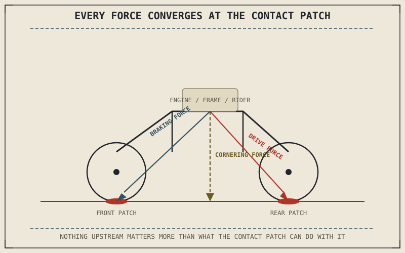

Every part of this book so far has quietly assumed a motorcycle can turn, brake, and accelerate — and every one of those assumptions rests entirely on a contact patch of rubber usually smaller than the palm of a hand. The engine can make all the power in the world, the chassis can be geometrically ideal, and the suspension can keep that contact patch perfectly planted, but none of it converts into actual motion unless the tyre sitting at the very end of that chain is capable of doing its one real job.
Chapter 5.11 closed Part V with a promise: that suspension generates no grip itself, only the conditions under which a tyre's contact patch has a chance to generate it. This chapter opens Part VI by explaining exactly what that job is, before the next seven chapters explain how a tyre is built and tuned to do it.
The Only Connection to the Road
A motorcycle interacts with the road through exactly two small contact patches, one under each tyre, and every force this book has discussed generating — the engine's driving force, the brakes' stopping force, the chassis's cornering force — has to pass through one or both of those patches to have any effect at all. This is worth stating plainly because it's easy to lose sight of once a book has spent five parts discussing engines, transmissions, chassis, and suspension in detail: none of those systems touch the road. Only the tyre does, and everything upstream of it is only ever as effective as the contact patch allows it to be.
A tyre's job, stated simply, is to convert whatever force the rest of the motorcycle asks of it — acceleration, braking, or cornering load — into an equal and opposite force from the road, through friction generated at that contact patch. Get more into that conversion later in this part; for now, the essential point is that a tyre is not a passive rubber doughnut the motorcycle happens to roll on. It's an active, load-bearing, force-transmitting component doing continuous, real-time engineering work every second it's in contact with the road.
Every force a motorcycle's engine, brakes, and chassis geometry can generate has to pass through a contact patch smaller than a hand span before it does anything at all. Nothing upstream of the tyre matters more than what the tyre can actually do with it.

A motorcycle shown with every major force it generates — engine drive force, braking force, cornering force — drawn as arrows converging down through the frame and suspension to a single small contact patch at the tyre.
Three Jobs, Not One
Look closely and a tyre is actually doing three distinct jobs at once, the same way Chapter 5.1 separated suspension's two jobs before explaining either one. First, it generates grip: converting engine, brake, and cornering forces into actual traction through friction at the contact patch. Second, it carries the motorcycle's entire weight, supporting load the same way a structural component would, while doing so through air pressure and a flexible carcass rather than a rigid material. Third, it absorbs a meaningful share of small-scale shock and vibration itself, working alongside the suspension this book has just finished covering rather than leaving all of that job to the springs and dampers. A tyre that does only the first of these three jobs well, while failing at the other two, is not actually a well-functioning tyre — this part will return to that balance repeatedly.
A Common Misconception, Cleared Up Early
It's an easy, intuitive mistake to think of a tyre as a fixed, unchanging piece of rubber that either "has grip" or "doesn't," the way a light switch is either on or off. Nothing about a real tyre works that way. Grip changes continuously with contact patch size and shape, tyre pressure, temperature, wear, road surface, and load — all subjects the coming chapters cover in turn — which means the same physical tyre can behave completely differently from one corner to the next, or one ride to the next, without anything about the tyre itself having changed. Treating grip as a fixed property of the tyre alone, rather than a constantly shifting outcome of the tyre interacting with specific conditions, is the single most common misunderstanding this part exists to correct.
Where This Leads
Before any of those variables can be discussed usefully, it helps to understand how a tyre is physically built — because pressure, flex, heat, and wear all behave differently depending on the construction underneath them. Chapter 6.2 opens with exactly that: bias-ply and radial construction, and why the difference isn't a marketing distinction but a real structural one.
Key Concepts to Remember
- Every force a motorcycle generates — engine, brakes, chassis geometry, suspension — has to pass through the tyre's contact patch to have any effect on motion at all.
- A tyre performs three jobs simultaneously: generating grip through friction, carrying the motorcycle's full weight, and absorbing a share of small-scale shock alongside the suspension.
- Grip is not a fixed property of a tyre — it changes continuously with contact patch, pressure, temperature, wear, surface, and load, so the same tyre can behave very differently under different conditions.
Cross-References
| ← Ch. 5.11 | Closed Part V with the claim that suspension generates no grip itself, only the conditions for the tyre to do so; this chapter opens Part VI by explaining that job directly. |
| ← Ch. 5.1 | Separated suspension's two jobs before explaining either in detail; this chapter uses the same approach to separate a tyre's three simultaneous jobs. |
| → Ch. 6.2 | Covers bias-ply and radial tyre construction as a real structural distinction underlying everything else this part will explain. |